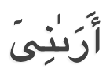
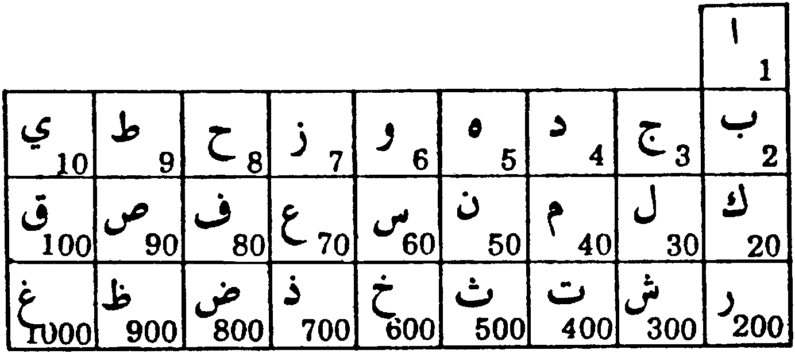
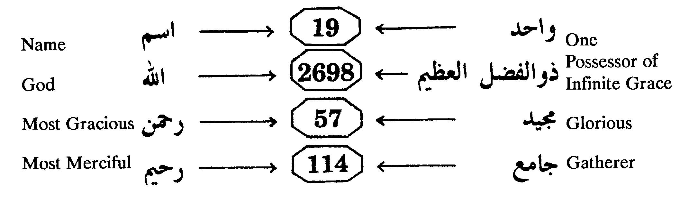

(from: Quran The Final Testament, by Rashad Khalifa, PhD.)
| The Quran is characterized by a unique phenomenon never found in any human authored book. Every element of the Quran is mathematically composed — the suras, the verses, the words, the number of certain letters, the number of words from the same root, the number and variety of divine names, the unique spelling of certain words, the absence or deliberate alteration of certain letters within certain words, and many other elements of the Quran besides its content. There are two major facets of the Quran's mathematical system: (1) The mathematical literary composition, and (2) The mathematical structure involving the numbers of suras and verses. Because of this comprehensive mathematical coding, the slightest distortion of the Quran's text or physical arrangement is immediately exposed. |
For the first time in history we have a scripture with built-in proof of divine authorship — a superhuman mathematical composition.
Any reader of this book can easily verify the Quran's mathematical miracle. The word "God” (Allah) is written in bold capital letters throughout the text. The frequency of occurrence of the word "God” is noted at the bottom of each page. The last page of the text, Page 372, shows that the total occurrence of the word "God” is 2698, or 19x142.
Furthermore, when we add the numbers of all the verses where the word “God” occurs, we obtain a total of 118123, also a multiple of 19 (118123 = 19x6217). Nineteen is the common denominator throughout the Quran’s mathematical system.
This phenomenon alone suffices as incontrovertible proof that the Quran is God's message to the world. No human being(s) could have kept track of 2698 occurrences of the word “God,” and the numbers of verses where they occur. This is especially impossible in view of (1) the age of ignorance during which the Quran was revealed, and (2) the fact that the suras and verses were widely separated in time and place of revelation. The chronological order of revelation was vastly different from the final format (Appendix 23). However, the Quran's mathematical system is not limited to the word “God;” it is extremely vast, extremely intricate, and totally comprehensive.
Like the Quran itself, the Quran's mathematical coding ranges from the very simple, to the very complex. The Simple Facts are those observations that can be ascertained without using any tools. The complex facts require the assistance of a calculator or a computer. The following facts do not require any tools to be verified:
| 1. | The first verse (1:1), known as " Basmalah,” consists of | 19 letters. |
| 2. | The Quran consists of 114 suras, which is | 19 x 6. |
| 3. | The total number of verses in the Quran is 6346, or | 19 x 334. |
| [6234 numbered verses & 112 un-numbered verses ( Basmalahs) 6234+112 = 6346] Note that 6+3+4+6= | 19. | |
| 4. | The Basmalah occurs 114 times, despite its conspicuous absence from Sura 9 (it occurs twice in Sura 27) & 114= | 19 x 6. |
| 5. | From the missing Basmalah of Sura 9 to the extra Basmalah of Sura 27, there are precisely | 19 suras. |
| 6. | It follows that the total of the sura numbers from 9 to 27 (9+10+11+12+...+26+27) is 342, or | 19 x 18. |
| 7. | This total (342) also equals the number of words between the two Basmalahs of Sura 27, and 342 = | 19 x 18. |
| 8. | The famous first revelation (96:1-5) consists of | 19 words. |
| 9. | This 19-worded first revelation consists of 76 letters | 19 x 4. |
| 10. | Sura 96, first in the chronological sequence, consists of | 19 verses. |
| 11. | This first chronological sura is placed atop the last | 19 suras. |
| 12. | Sura 96 consists of 304 Arabic letters, and 304 equals | 19 x 16. |
| 13. | The last revelation (Sura 110) consists of | 19 words. |
| 14. | The first verse of the last revelation (110:1) consists of | 19 letters. |
| 15. | 14 different Arabic letters, form 14 different sets of "Quranic Initials” (such as A.L.M. of 2:1), and prefix 29 suras. These numbers add up to 14+14+29=57= | 19 x 3. |
| 16. | The total of the 29 sura numbers where the Quranic Initials occur is 2+3+7+...+50+68 = 822, and 822+14 (14 sets of initials) equals 836, or | 19 x 44. |
| 17. | Between the first initialed sura (Sura 2) and the last initialed sura (Sura 68) there are 38 un-initialed suras | 19 x 2. |
| 18. | Between the first and last initialed sura there are | 19 sets |
| of alternating "initialed” and "uninitialed” suras. | ||
| 19. | The Quran mentions 30 different numbers: 1, 2, 3, 4, 5, 6, 7, 8, 9, 10, 11, 12, 19, 20, 30, 40, 50, 60, 70, 80, 99, 100, 200, 300, 1000, 2000, 3000, 5000, 50,000, & 100,000. The sum of these numbers is 162146, which equals | 19x8534. |
This is a condensed summary of the Simple Facts.
The Quran is characterized by a unique phenomenon never found in any other book; 29 suras are prefixed with 14 different sets of "Quranic Initials,” consisting of one to five letters per set. Fourteen letters, half the Arabic alphabet, participate in these initials. The significance of the Quranic initials remained a divinely guarded secret for 14 centuries.
The Quran states in 10:20 and 25:4-6 that its miracle, i.e., proof of divine authorship, was destined to remain secret for a specific predetermined interim:
|
They said, "Why hasn't a miracle come down to him from his Lord?”
Say, "Only God knows the future. Therefore, wait, and I will wait along with you.”
[10:20]
******
Those who disbelieved said, "This is no more than a fabrication by him, with the help of other people.” Indeed, they uttered a blasphemy; a falsehood. Others said, "Tales from the past that he wrote down; they were dictated to him day and night.” Say, "This was sent down from the One who knows `the secret' in the heavens and the earth.” Surely, He is Forgiving, Most Merciful. [25:4-6] |
The Quranic Initials constitute a major portion of the Quran's 19-based mathematical miracle.
Table 1: List of the Quranic Initials and Their Suras
No. |
Sura No. |
Sura Title |
Quranic Initials |
| 1. | 2 | The Heifer | A.L.M. |
| 2. | 3 | The Amramites | A.L.M. |
| 3. | 7 | The Purgatory | A.L.M.S. |
| 4. | 10 | Jonah | A.L.R. |
| 5. | 11 | Hûd | A.L.R. |
| 6. | 12 | Joseph | A.L.R. |
| 7. | 13 | Thunder | A.L.M.R. |
| 8. | 14 | Abraham | A.L.R. |
| 9. | 15 | Al-Hijr Valley | A.L.R. |
| 10. | 19 | Mary | K.H.Y.‘A.S. |
| 11. | 20 | T.H. | T.H. |
| 12. | 26 | The Poets | T.S.M. |
| 13. | 27 | The Ant | T.S. |
| 14. | 28 | History | T.S.M. |
| 15. | 29 | The Spider | A.L.M. |
| 16. | 30 | The Romans | A.L.M. |
| 17. | 31 | Luqmaan | A.L.M. |
| 18. | 32 | Prostration | A.L.M. |
| 19. | 36 | Y.S. | Y.S. |
| 20. | 38 | S. | S. |
| 21. | 40 | Forgiver | H.M. |
| 22. | 41 | Elucidated | H.M. |
| 23. | 42 | Consultation | H.M. ‘A.S.Q |
| 24. | 43 | Ornaments | H.M. |
| 25. | 44 | Smoke | H.M. |
| 26. | 45 | Kneeling | H.M. |
| 27. | 46 | The Dunes | H.M. |
| 28. | 50 | Q. | Q. |
| 29. | 68 | The Pen | NuN |
In 1968, I realized that the existing English translations of the Quran did not present the truthful message of God's Final Testament. For example, the two most popular translators, Yusuf Ali and Marmaduke Pickthall, could not overcome their corrupted religious traditions when it came to the Quran's great criterion in 39:45.
| When God ALONE is mentioned, the hearts of those who do not believe in the Hereafter shrink with aversion. But when others are mentioned beside Him, they rejoice. [39:45] |
Yusuf Ali omitted the crucial word "ALONE” from his translation, and altered the rest of the verse by inserting the word "(gods).” Thus, he utterly destroyed this most important Quranic criterion. He translated 39:45 as follows:
| When God, the One and Only, is mentioned, the hearts of those who believe not in the Hereafter are filled with disgust and horror; but when (gods) other than He are mentioned, behold, they are filled with joy. [39:45] (according to A. Yusuf Ali) |
The expression "When God, the One and Only, is mentioned,” is not the same as saying, "When God alone is mentioned.” One can mention "God, the One and Only,” and also mention Muhammad or Jesus, and no one will be upset. But if "God ALONE is mentioned,” you cannot mention anyone else, and a lot of people — those who idolize Muhammad or Jesus — will be upset. Thus, Yusuf Ali could not bring himself to present the truth of the Quran, if it exposed his corrupted belief.
Marmaduke Pickthall translated "ALONE” correctly, but destroyed the criterion by inserting his personal belief in parentheses; he translated 39:45 as follows:
| And when Allah alone is mentioned, the hearts of those who believe not in the Hereafter are repelled, and when those (whom they worship) beside Him are mentioned, behold! they are glad. [39:45] (according to Marmaduke Pickthal) |
When I saw the truth of God's word thus distorted, I decided to translate the Quran, at least for the benefit of my own children. Since I was a chemist by profession, and despite my extensive religious background — my father was a renowned Sufi leader in Egypt — I vowed to God that I would not move from one verse to the next unless I fully understood it.
I purchased all the available books of Quranic translations and exegeses (Tafseer) I could find, placed them on a large table, and began my translation. The first sura, The Key, was completed in a few days. The first verse in Sura 2 is "A.L.M.” The translation of this verse took four years, and coincided with the divine unveiling of "the secret,” the great mathematical Miracle of the Quran.
The books of Quranic exegeses unanimously agreed that "no one knows the meaning or significance of the Quranic Initials A.L.M., or any other initials.” I decided to write the Quran into the computer, analyze the whole text, and see if there were any mathematical correlations among these Quranic initials.
I used a time-share terminal, connected by telephone to a giant computer. To test my hypothesis, I decided to look at the single-lettered Quranic Initials — "Q” (Qaaf) of Suras 42 and 50, "S” (Saad) of Suras 7, 19, and 38, and "N” (Noon) of Sura 68. As detailed in my first book MIRACLE OF THE QURAN: SIGNIFICANCE OF THE MYSTERIOUS ALPHABETS (Islamic Productions, 1973), many previous attempts to unravel the mystery had failed.
The computer data showed that the text of the only Q-initialed suras, 42 and 50, contained the same number of Q's, 57 and 57. That was the first hint that a deliberate mathematical system may exist in the Quran.
Sura 50 is entitled "Q,” prefixed with "Q,” and the first verse reads, "Q, and the glorious Quran.” This indicated that "Q” stands for "Quran,” and the total number of Q's in the two Q-initialed suras represents the Quran's 114 suras (57+57 = 114 = 19x6). This idea was strengthened by the fact that "the Quran” occurs in the Quran 57 times.
The Quran is described in Sura "Q” as "Majid” (glorious), and the Arabic word "Majid” has a gematrical value of 57: M (40)+J (3)+I (10)+D (4) = 57.
Sura 42 consists of 53 verses, and 42+53 = 95 = 19x5.
Sura 50 consists of 45 verses, and 50+45 = 95, same total as in Sura 42.
By counting the letter "Q” in every "Verse 19” throughout the Quran, the total count comes to 76, 19x4. Here is a summary of the Q-related data:
Glimpses of the Quran's mathematical composition began to emerge. For example, it was observed that the people who disbelieved in Lot are mentioned in 50:13 and occur in the Quran 13 times — 7:80; 11:70, 74, 89; 21:74; 22:43; 26:160; 27:54, 56; 29:28; 38:13; 50:13; and 54:33. Consistently, they are referred to as “ Qawm,” with the single exception of the Q-initialed Sura 50 where they are referred to as “ Ikhwaan.” Obviously, if the regular, Q-containing word “ Qawm” were used, the count of the letter “Q” in Sura 50 would have become 58, and this whole phenomenon would have disappeared. With the recognized absolute accuracy of mathematics, the alteration of a single letter destroys the system.
Another relevant example is the reference to Mecca in 3:96 as “ Becca!" This strange spelling of the renowned city has puzzled Islamic scholars for many centuries. Although Mecca is mentioned in the Quran properly spelled in 48:24, the letter “M” is substituted with a “B” in 3:96. It turns out that Sura 3 is an M-initialed sura, and the count of the letter “M” would have deviated from the Quran's code if “Mecca” was spelled correctly in 3:96.
This initial is unique; it occurs in one sura, 68, and the name of the letter is spelled out as three letters — Noon Wow Noon — in the original text, and is therefore counted as two N's. The total count of this letter in the N-initialed sura is 133, 19x7.
The fact that "N” is the last Quranic Initial (see Table 1) brings out a number of special observations. For example, the number of verses from the first Quranic Initial (A.L.M. of 2:1) to the last initial (N. of 68:1) is 5263, or 19x277.
The word "God” (Allah) occurs 2641 (19x139) times between the first initial and the last initial. Since the total occurrence of the word "God” is 2698, it follows that its occurrence outside the initials "A.L.M.” of 2:1 on one side, and the initial "N” of 68:1 on the other side, is 57, 19x3. Tables 9 to 18 prove that the initial "NuN” must be spelled out to show two N's.
This initial prefixes three suras, 7, 19, and 38, and the total occurrence of the letter "S” (Saad) in these three suras is 152, 19x8 (Table 2). It is noteworthy that in 7:69, the word "Bastatan” is written in some printings with a "Saad,” instead of "Seen.”
Table 2: The Frequency of Occurrence of the Letter "S" in the Saad-initialed Suras
| Sura No. |
Frequency of The letter "S" |
| 7 | 97 |
| 19 | 26 |
| 38 | 29 |
| 152 (19x8) |
This is an erroneous distortion that violates the Quran's code. By looking at the oldest available copy of the Quran, the Tashkent Copy, it was found that the word “Bastatan” is correctly written with a “Seen” (see photocopy below).
The momentous discovery that "19” is the Quran's common denominator became a reality in January 1974, coinciding with Zul-Hijjah 1393 A.H. The Quran was revealed in 13 B.H. (Before Hijrah). This makes the number of years from the revelation of the Quran to the revelation of its miracle 1393 + 13 = 1406 = 19x74. As noted above, the unveiling of the Miracle took place in January 1974. The correlation between 19x74 lunar years and 1974 solar years could not escape notice. This is especially uncanny in view of the fact that "19” is mentioned in Sura 74.
These two letters prefix Sura 36. The letter "Y” occurs in this sura 237 times, while the letter "S” (Seen) occurs 48 times. The total of both letters is 285, 19x15.
It is noteworthy that the letter “Y” is written in the Quran in two forms; one is obvious and the other is subtle. The subtle form of the letter may be confusing to those who are not thoroughly familiar with the Arabic language. A good example is the word " Araany " which is mentioned twice in 12:36. The letter “Y” is used twice in this word, the first “Y” is subtle and the second is obvious. Sura 36 does not contain a single “Y” of the subtle type. This is a remarkable phenomenon, and one that does not normally occur in a long sura like Sura 36. In my book QURAN: VISUAL PRESENTATION OF THE MIRACLE (Islamic Productions, 1982) every “Y” and “S” in Sura 36 is marked with a star.
Seven suras are prefixed with the letters “H ” and “M ;” Suras 40 through 46. The total occurrence of these two letters in the seven H.M.-initialed suras is 2147, or 19x113. The detailed data are shown in Table 3.
Naturally, the alteration of a single letter “H” or “M” in any of the seven H.M.-initialed suras would have destroyed this intricate phenomenon.
Table 3: Occurrence of the Letters "H" and "M" in the Seven H.M.-Initialed Suras
| Sura | Frequency of Occurrence | ||
| No. | "H" | "M" | "H+M" |
| 40 | 64 | 380 | 444 |
| 41 | 48 | 276 | 324 |
| 42 | 53 | 300 | 353 |
| 43 | 44 | 324 | 368 |
| 44 | 16 | 150 | 166 |
| 45 | 31 | 200 | 231 |
| 46 | 36 | 225 | 261 |
| 292 | 1855 | 2147 | |
| (19x113) | |||
These initials constitute Verse 2 of Sura 42, and the total occurrence of these letters in this sura is 209, or 19x11. The letter “ `A” (`Ayn) occurs 98 times, the letter “S” (Seen) occurs 54 times, and the letter “Q” (Qaf) occurs 57 times.
The letters “A,” “L,” and “M” are the most frequently used letters in the Arabic language, and in the same order as we see in the Quranic Initials — “A,” then “L,” then “M.” These letters prefix six suras — 2, 3, 29, 30, 31, and 32 — and the total occurrence of the three letters in each of the six suras is a multiple of 19 [9899 (19x521), 5662 (19x 298), 1672 (19x88), 1254 (19x66), 817 (19x43), and 570 (19x30), respectively]. Thus, the total occurrence of the three letters in the six suras is 19874 (19x 1046), and the alteration of one of these letters destroys this phenomenon.
Table 4: Occurrence of the Letters "A," "L," and "M" in the A.L.M.-Initialed Suras.
| Sura | Frequency of Occurrence | |||
| No. | "A" | "L" | "M" | Total |
| 2 | 4502 | 3202 | 2195 | 9899 (19x521) |
| 3 | 2521 | 1892 | 1249 | 5662 (19x298) |
| 29 | 774 | 554 | 344 | 1672 (19x88) |
| 30 | 544 | 393 | 317 | 1254 (19x66) |
| 31 | 347 | 297 | 173 | 817 (19x43) |
| 32 | 257 | 155 | 158 | 570 (19x30) |
| 8945 | 6493 | 4436 | 19874 (19x1046) | |
These initials are found in Suras 10, 11, 12, 14, and 15. The total occurrences of these letters in these suras are 2489 (19x131), 2489 (19x131), 2375 (19x 125), 1197 (19x63), and 912 (19x48), respectively (Table 5).
Table 5: Occurrence of the Letters "A," "L," and "R" in the A.L.R.-Initialed Suras
| Sura | Frequency of Occurrence | |||
| No. | "A" | "L" | "R" | Total |
| 10 | 1319 | 913 | 257 | 2489 (19x131) |
| 11 | 1370 | 794 | 325 | 2489 (19x131) |
| 12 | 1306 | 812 | 257 | 2375 (19x125) |
| 14 | 585 | 452 | 160 | 1197 (19x63) |
| 15 | 493 | 323 | 96 | 912 (19x48) |
| 5073 | 3294 | 1095 | 9462 (19x498) | |
These initials prefix one sura, No. 13, and the total frequency of occurrence of the four letters is 1482, or 19x78. The letter “A” occurs 605 times, “L” occurs 480 times, “M” occurs 260 times, and “R” occurs 137 times.
Only one sura is prefixed with these initials, Sura 7, and the letter “A” occurs in this sura 2529 times, “L” occurs 1530 times, “M” occurs 1164 times, and “S” (Saad) occurs 97 times. Thus, the total occurrence of the four letters in this sura is 2529+1530+1164+97 = 5320 = 19x280.
An important observation here is the interlocking relationship involving the letter “S” (Saad). This letter occurs also in Suras 19 and 38. While complementing its sister letters in Sura 7 to give a total that is divisible by 19, the frequency of this letter also complements its sister letters in Suras 19 and 38 to give a multiple of 19 (see Page 380).
Additionally, the Quranic Initial “S” (Saad) interacts with the Quranic Initials “K.H.Y. `A.” (Kaaf Ha Ya `Ayn) in Sura 19 to give another total that is also a multiple of 19 (see Page 383). This interlocking relationship — which is not unique to the initial “S” (Saad) — contributes to the intricacy of the Quran's numerical code.
This is the longest set of initials, consisting of five letters, and it occurs in one sura, Sura 19. The letter “K” in Sura 19 occurs 137 times, “H” occurs 175 times, “Y” occurs 343 times, “ `A” occurs 117 times, and “S” (Saad) occurs 26 times. Thus, the total occurrence of the five letters is 137+175+343+117+26 = 798 = 19x42.
An intricate interlocking relationship links these overlapping Quranic Initials to produce a total that is also a multiple of 19. The initial “H.” is found in Suras 19 and 20. The initials “T.H.” prefix Sura 20. The initials “T.S.” are found in Sura 27, while the initials “T.S.M.” prefix its surrounding Suras 26 & 28.
It should be noted at this time that the longer, more complex, interlocking and overlapping initials are found in the suras where uncommonly powerful miracles are narrated. For example, the virgin birth of Jesus is given in Sura 19, which is prefixed with the longest set of initials, K.H.Y.`A.S.
The interlocking initials “H.,” “T.H.,” “T.S.,” and “T.S.M.” prefix suras describing the miracles of Moses, Jesus, and the uncommon occurrences surrounding Solomon and his jinns. God thus provides stronger evidence to support stronger miracles. The frequencies of occurrence of these initials are presented in Table 6.
Table 6: Occurrence of the Quranic Initials "H.," "T.H.," "T.S.," and "T.S.M." in Their Suras
| Sura | Frequency of | |||
| "H" | "T" | "S" | "M" | |
| 19 | 175 | — | — | — |
| 20 | 251 | 28 | — | — |
| 26 | — | 33 | 94 | 484 |
| 27 | — | 27 | 94 | - |
| 28 | — | 19 | 102 | 460 |
| 426 | 107 | 290 | 944 | |
| 426+107+290+944 = 1767 = (19x93) | ||||
When the Quran was revealed, 14 centuries ago, the numbers known today did not exist. A universal system was used where the letters of the Arabic, Hebrew, Aramaic, and Greek alphabets were used as numerals. The number assigned to each letter is its “Gematrical Value.” The numerical values of the Arabic alphabet are shown in Table 7.
Table 7: Gematrical Values of the Arabic Alphabet

Fourteen Arabic letters, half the Arabic alphabet, participate in the formation of 14 different sets of Quranic Initials. By adding the gematrical value of each one of these letters, plus the number of suras which are prefixed with Quranic Initials (29), we obtain a total of 722, or 19x19x2.
Additionally, if we add the total gematrical value of all 14 initials, plus the number of the first sura where the initial occurs, we get a grand total of 988, 19x52. Table 8 presents these data.
Table 8: The 14 Letters Used in Forming Quranic Initials
| Letter | Value | First Sura |
| A (Alef) | 1 | 2 |
| L (Laam) | 30 | 2 |
| M (Mim) | 40 | 2 |
| S (Saad) | 90 | 7 |
| R (Ra) | 200 | 10 |
| K (Kaf) | 20 | 19 |
| H (Ha) | 5 | 19 |
| Y (Ya) | 10 | 19 |
| `A (`Ayn) | 70 | 19 |
| T (Ta) | 9 | 20 |
| S (Seen) | 60 | 26 |
| H (HHa) | 8 | 40 |
| Q (Qaf) | 100 | 42 |
| N (Noon) | 50 | 68 |
| 693 | 295 | |
| 693 + 295 = 988 = 19x52 | ||
| also 693 + 29 (suras) = 722 = 19x19x2 | ||
If we add the number of occurrences of each of the 14 letters listed in Table 8 as an initial, plus the numbers of the suras where it occurs as an initial, the Grand Total comes to 2033, 19x107. See Table 9.
Table 9: Mathematically Structured Distribution of the Quranic Initials
| Initial | Number of Occurrences | Suras Where It Occurs | Total |
| A (Alef) | 13 | [+ 2 + 3 + 7 + 10 + 11 + 12 + 13 + 14 + 15 + 29 + 30 + 31 + 32] | 222 |
| L (Laam) | 13 | [+ 2 + 3 + 7 + 10 + 11 + 12 + 13 + 14 + 15 + 29 + 30 + 31 + 32] | 222 |
| M (Mim) | 17 | [+ 2 + 3 + 7 + 13 + 26 + 28 + 29 + 30 + 31 + 32 + 40 + 41 + 42 + 43 + 44 + 45 + 46] | 519 |
| S (Saad) | 3 | + 7 + 19 + 38 | 67 |
| R (Ra) | 6 | + 10 + 11 + 12 + 13 + 14 + 15 | 81 |
| K (Kaf) | 1 | + 19 | 20 |
| H (Ha) | 2 | + 19 + 20 | 41 |
| Y (Ya) | 2 | + 19 + 36 | 57 |
| `A (`Ayn) | 2 | + 19 + 42 | 63 |
| T (Ta) | 4 | + 20 + 26 + 27 + 28 | 105 |
| S (Seen) | 5 | + 26 + 27 + 28 + 36 + 42 | 164 |
| H (HHa) | 7 | + 40 + 41 + 42 + 43 + 44 + 45 + 46 | 308 |
| Q (Qaf) | 2 | +42+50 | 94 |
| N (Noon) | 2 | +68 | 70 |
| 79 | 1954 | 2033 | |
| (19x107) |
Table 10 presents the total frequency of Quranic Initials, plus the total gematrical value of these letters in the whole sura. The Grand Total for all initialed suras is 1089479. This number, in excess of one million, is a multiple of 19 (1089479 = 19 x 57341). The slightest alteration or distortion destroys the system.
Note: The total gematrical value of the Quranic Initials in a given sura equals the gematrical value of each initial multiplied by the frequency of occurrence of that initial in the sura.
Table 10: Total Gematrical Values of All Quranic Initials In Their Suras
| Suras | Initials | Frequency of Initials | Total Value in Whole Sura |
| 2 | A.L.M. | 9899 | 188362 |
| 3 | A.L.M. | 5662 | 109241 |
| 7 | A.L.M.S | 5320 | 103719 |
| 10 | A.L.R. | 2489 | 80109 |
| 11 | A.L.R. | 2489 | 90190 |
| 12 | A.L.R. | 2375 | 77066 |
| 13 | A.L.M.R. | 1482 | 52805 |
| 14 | A.L.R. | 1197 | 46145 |
| 15 | A.L.R. | 912 | 29383 |
| 19 | K.H.Y.`A.S. | 798 | 17575 |
| 20 | T.H. | 279 | 1507 |
| 26 | T.S.M. | 611 | 25297 |
| 27 | T.S. | 121 | 5883 |
| 28 | T.S.M. | 581 | 24691 |
| 29 | A.L.M. | 1672 | 31154 |
| 30 | A.L.M. | 1254 | 25014 |
| 31 | A.L.M. | 817 | 16177 |
| 32 | A.L.M. | 570 | 11227 |
| 36 | Y.S. | 285 | 5250 |
| 38 | S. | 29 | 2610 |
| 40 | H.M. | 444 | 15712 |
| 41 | H.M. | 324 | 11424 |
| 42 | H.M.-`A.S.Q. | 562 | 28224 |
| 43 | H.M. | 368 | 13312 |
| 44 | H.M. | 166 | 6128 |
| 45 | H.M. | 231 | 8248 |
| 46 | H.M. | 261 | 9288 |
| 50 | Q | 57 | 5700 |
| 68 | N,N | 133 | 6650 |
| 41388 | 1048091 | ||
| 41388 + 1048091 = 1089479 (19 x 57341) | |||
It is noteworthy that the initial “N” must be counted as two N's. This reflects the fact that the original Quranic text spells out this initial with 2 N's.
Table 11: Parameters of the 14 Individual Quranic Initials
| Initial | Sura , Verse, & (Frequency) of Initial in Each Sura | First Sura | Last Sura |
| A (Alef) | 2:1 (4502), 3:1 (2521), 7:1 (2529), 10:1 (1319) 11:1 (1370), 12:1 (1306), 13:1 (605), 14:1 (585), 15:1 (493), 29:1 (774), 30:1 (544), 31:1 (347), 32:1 (257) | 2 | 32 |
| L (Laam) | 2:1 (3202), 3:1 (1892), 7:1 (1530), 10:1 (913), 11:1 (794), 12:1 (812), 13:1 (480), 14:1 (452), 15:1 (323), 29:1 (554), 30:1 (393), 31:1 (297), 32:1 (155) | 2 | 32 |
| M (Mim) | 2:1 (2195), 3:1 (1249), 7:1 (1164), 13:1 (260) 26:1 (484), 28:1 (460), 29:1 (344), 30:1 (317), 31:1 (173), 32:1 (158), 40:1 (380), 41:1 (276), 42:1 (300), 43:1 (324), 44:1 (150), 45:1 (200), 46:1 (225) | 2 | 46 |
| S (Saad) | 7:1 (97), 19:1 (26), 38:1 (29) | 7 | 38 |
| R (Ra) | 10:1 (257), 11:1 (325), 12:1 (257), 13:1 (137), 14:1 (160), 15:1 (96) | 10 | 15 |
| K (Kaf) | 19:1 (137) | 19 | 19 |
| H (Ha) | 19:1 (175), 20:1 (251) | 19 | 20 |
| Y (Ya) | 19:1 (343), 36:1 (237) | 19 | 36 |
| `A (`Ayn) | 19:1 (117), 42:2 (98) | 19 | 42 |
| T (Ta) | 20:1 (28), 26:1 (33), 27:1 (27), 28:1 (19) | 20 | 28 |
| S (Seen) | 26:1 (94), 27:1 (94), 28:1 (102), 36:1 (48), 42:2 (54) | 26 | 42 |
| H (HHa) | 40:1 (64), 41:1 (48), 42:1 (53), 43:1 (44) 44:1 (16), 45:1 (31), 46:1 (36) | 40 | 46 |
| Q (Qaf) | 42:2 (57), 50:1 (57) | 42 | 50 |
| N (NuN) | 68:1 (133) | 68 | 68 |
| 43423 | 295 | 514 | |
| Grand Total = 43423+295+514 = 44232 = 19x2328. | |||
A special mathematical coding authenticates the number of verses where the Quranic Initials themselves are found. As detailed in Table 11, all Quranic Initials occur in Verse 1, except in Sura 42 (initials in Verses 1 and 2). This fact is supported by the remarkable mathematical phenomenon detailed in Table 12. If we multiply the first two columns of Table 12, instead of adding, we still end up with a Total that is divisible by 19 (see Table 13).
Table 12: Mathematical Coding of the Number of Verses with Initials
| Sura No. | No. of Initials | Initialed Verses |
| 2 | 3 | 1 |
| 3 | 3 | 1 |
| 7 | 4 | 1 |
| 10 | 3 | 1 |
| 11 | 3 | 1 |
| 12 | 3 | 1 |
| 13 | 4 | 1 |
| 14 | 3 | 1 |
| 15 | 3 | 1 |
| 19 | 5 | 1 |
| 20 | 2 | 1 |
| 26 | 3 | 1 |
| 27 | 2 | 1 |
| 28 | 3 | 1 |
| 29 | 3 | 1 |
| 30 | 3 | 1 |
| 31 | 3 | 1 |
| 32 | 3 | 1 |
| 36 | 2 | 1 |
| 38 | 1 | 1 |
| 40 | 2 | 1 |
| 41 | 2 | 1 |
| 42 | 5 | 2 |
| 43 | 2 | 1 |
| 44 | 2 | 1 |
| 45 | 2 | 1 |
| 46 | 2 | 1 |
| 50 | 1 | 1 |
| 68 | 2 | 1 |
| 822 | 79 | 30 |
| 822 + 79 + 30 = 931 (19x49) | ||
Table 13: Multiplying the First Two Columns of Table 12, Instead of Adding
| Sura No. |
No. of Initials |
Number of Initialed Verses |
|
| 2 | 3 | 1 | |
| 3 | 3 | 1 | |
| 7 | 4 | 1 | |
| - | - | - | |
| 42 | 5 | 2 | |
| - | - | - | |
| 50 | 1 | 1 | |
| 68 | 2 | 1 | |
| 2022 | 30 | ||
| 2022 + 30 = 2052 (19x108) | |||
Obviously, it is crucial to have two different initialed verses in Sura 42 in order to conform with the Quran's mathematical code. The fact that Verse 1 of Sura 42 consists of the two Quranic Initials “H.M.” and the second verse consists of the three Initials “ `A.S.Q.” has perplexed Muslim scholars and orientalists for 14 centuries.
By the end of this Appendix, the reader will see that every element of the Quran is mathematically authenticated. The elements we are dealing with now are “the number of Quranic Initials in each initialed sura” and “the number of verses that contain Quranic Initials.” Tables 11 through 13 have dealt with these two elements.
Additional mathematical authentication is shown in Tables 14 and 15. In Table 14, we have the numbers of all initialed suras added to the number of verses in each sura, plus the number of verses containing initials, plus the gematrical values of those initials. The Grand Total is 7030, or 19x370.
Table 14: Mathematical Properties of the Initialed Suras
| Sura Number |
Number of Verses |
Number of Initialed Verses |
Gematrical Value of the Initials |
TOTAL |
| 2 | 286 | 1 | 71 | 360 |
| 3 | 200 | 1 | 71 | 275 |
| 7 | 206 | 1 | 161 | 375 |
| 10 | 109 | 1 | 231 | 351 |
| 11 | 123 | 1 | 231 | 366 |
| 12 | 111 | 1 | 231 | 355 |
| 13 | 43 | 1 | 271 | 328 |
| 14 | 52 | 1 | 231 | 298 |
| 15 | 99 | 1 | 231 | 346 |
| 19 | 98 | 1 | 195 | 313 |
| 20 | 135 | 1 | 14 | 170 |
| 26 | 227 | 1 | 109 | 363 |
| 27 | 93 | 1 | 69 | 190 |
| 28 | 88 | 1 | 109 | 226 |
| 29 | 69 | 1 | 71 | 170 |
| 30 | 60 | 1 | 71 | 162 |
| 31 | 34 | 1 | 71 | 137 |
| 32 | 30 | 1 | 71 | 134 |
| 36 | 83 | 1 | 70 | 190 |
| 38 | 88 | 1 | 90 | 217 |
| 40 | 85 | 1 | 48 | 174 |
| 41 | 54 | 1 | 48 | 144 |
| 42 | 53 | 2 | 278 | 375 |
| 43 | 89 | 1 | 48 | 181 |
| 44 | 59 | 1 | 48 | 152 |
| 45 | 37 | 1 | 48 | 131 |
| 46 | 35 | 1 | 48 | 130 |
| 50 | 45 | 1 | 100 | 196 |
| 68 | 52 | 1 | 50 + 50 | 221 |
| 822 | + 2743 | + 30 | + 3435 | = 7030 (19x370) |
The number of verses per sura, and the numbers assigned to each verse are among the basic elements of the Quran. Not only are these elements authenticated mathematically, but both initialed and un-initialed suras are independently coded. Since we are now dealing with the initialed suras, Table 16 presents the numbers assigned to these suras, added to the numbers of verses in each sura, plus the sum of verse numbers (1+2+3+ ... + n). The Grand total is 190133, or 19x10007.
Table 15: Multiplying the First 2 Columns of Table 14, Instead of Adding Them
| Sura Number |
Number of Verses |
Number of Initialed Verses |
Gematrical Value of the Initials |
TOTAL | |||||
| 2 | x | 286 | + | 1 | + | 71 | = | 644 | |
| 3 | x | 200 | + | 1 | + | 71 | = | 672 | |
| 7 | x | 206 | + | 1 | + | 161 | = | 1604 | |
| - | - | - | - | - | |||||
| 50 | x | 45 | + | 1 | + | 100 | = | 2351 | |
| 68 | x | 52 | + | 1 | + | (50+50) | = | 3637 | |
| 60071 | 30 | 3435 | = | 63536 (19x3344) |
|||||
By adding the number of every sura to the number of the next sura, and accumulating the sums of sura numbers as we continue this process to the end of the Quran, we will have a value that corresponds to each sura. Thus, Sura 1 will have a corresponding value of 1, Sura 2 will have a value of 1+2=3, Sura 3 will have a value of 3+3=6, Sura 4 will have a value of 6+4 = 10, and so on to the end of the Quran. The total values for the initialed and the un-initialed suras are independently divisible by 19. The values for the initialed suras are shown in Table 17.
Table 16: Mathematical Structuring of the Verses of Initialed Suras
| Sura No. |
No. of Verses |
Sum of Verse #s |
Total |
| 2 | 286 | 41041 | 41329 |
| 3 | 200 | 20100 | 20303 |
| 7 | 206 | 21321 | 21534 |
| - | - | - | - |
| 50 | 45 | 1035 | 1130 |
| 68 | 52 | 1378 | 1498 |
| 822 | 2743 | 186568 | 190133 (19x10007) |
Table 17: Values Obtained by Successive Addition of Sura Numbers.
| Sura Number | Calculated Value |
| 2 | 3 |
| 3 | 6 |
| 7 | 28 |
| 10 | 55 |
| 11 | 66 |
| 12 | 78 |
| 13 | 91 |
| 14 | 105 |
| 15 | 120 |
| 19 | 190 |
| 20 | 210 |
| - | - |
| 44 | 990 |
| 45 | 1035 |
| 46 | 1081 |
| 50 | 1275 |
| 68 | 2346 |
| 15675 | |
| (19x825) |
The values calculated for the un-initialed suras add up to a total of 237785, which is also a multiple of 19 (237785 = 19x12515).
[2] The numbers of verses where the word “God” occurs add up to 118123, also a multiple of 19 (118123 = 19x6217).
These simple phenomena gave us many difficulties while simply counting the word “God.” We were a group of workers, equipped with computers, and all of us college graduates. Yet, we made several errors in counting, calculating, or simply writing the counts of the word “God.” Those who still claim that Muhammad was the author of the Quran are totally illogical; he never went to college, and he did not have a computer.
[3] From the first Quranic Initials (A.L.M. 2:1) to the last initial (N. 68:1), there are 2641, 19 x 139, occurrences of the word “God.”
[4] The word “God” occurs 57 times in the section outside the Initials (Table 18).
[5] By adding the numbers of the suras and verses where these 57 occurrences of the word “God” are found, we get a total of 2432, or 19x128. See Table 18.
[6] The word “God” occurs in 85 suras. If we add the number of each sura to the number of verses between the first and last occurrences of the word “God,” both verses inclusive, the Grand Total comes to 8170 or 19 x 430. An abbreviated representation of the data is shown in Table 19.
Table 18: Occurrence of the Word "God" outside the Initialed Section
| Number of Sura | Numbers of Verses | Number of Occurrences |
| 1 | 1,2 | 2 |
| 69 | 33 | 1 |
| 70 | 3 | 1 |
| 71 | 3,4,13,15,17,19,25 | 7 |
| 72 | 4,5,7,12,18,19,22,23 | 10 |
| 73 | 20 | 7 |
| 74 | 31,56 | 3 |
| 76 | 6,9,11,30 | 5 |
| 79 | 25 | 1 |
| 81 | 29 | 1 |
| 82 | 19 | 1 |
| 84 | 23 | 1 |
| 85 | 8,9,20 | 3 |
| 87 | 7 | 1 |
| 88 | 24 | 1 |
| 91 | 13 | 2 |
| 95 | 8 | 1 |
| 96 | 14 | 1 |
| 98 | 2,5,8 | 3 |
| 104 | 6 | 1 |
| 110 | 1,2 | 2 |
| 112 | 1,2 | 2 |
| 1798 | 634 | 57 |
| (19x3) | ||
| Sum of numbers of the suras & verses = 1798 + 634 = 2432 | ||
| = 19 x 128 | ||
| Total occurrence of the word "God" outside the initialed section = 57 (19 x 3). | ||
Table 19: All Suras in Which the Word "God" (Allah) Is Mentioned
No |
Sura No. |
First Verse |
Last Verse |
# Verses From First to Last |
| 1. | 1 | 1 | 2 | 2 |
| 2. | 2 | 7 | 286 | 280 |
| 3. | 3 | 2 | 200 | 199 |
| - | - | - | - | - |
| 83. | 104 | 6 | - | 1 |
| 84. | 110 | 1 | 2 | 2 |
| 85. | 112 | 1 | 2 | 2 |
| 3910 | 4260 | |||
| 3910 +4260 =8170 = 19x430 | ||||
| These mathematical properties cover all occurrences of the word "God." | ||||
[7] The Quran's dominant message is that there is only “One God.” The word “One,” in Arabic “ Wahed” occurs in the Quran 25 times. Six of these occurrences refer to other than God (one kind of food, one door, etc.). The other 19 occurrences refer to God. These data are found in the classic reference INDEX TO THE WORDS OF QURAN.
As pointed out later in this Appendix, all God's scriptures, not only the Quran, were mathematically coded with the number “19.” Even the universe at large bears this divine mark. The number 19 can be looked upon as the Almighty Creator's signature on everything He created (see Appendix 38). The number “19” possesses unique mathematical properties beyond the scope of this Appendix. For example:
[1] It is a prime number.
[2] It encompasses the first numeral (1) and the last numeral (9), as if to proclaim God's attribute in 57:3 as the “Alpha and the Omega.”
[3] It looks the same in all languages of the world. Both components, 1 and 9, are the only numerals that look the same in all languages.
|
The Lord our God is ONE! Therefore, you shall worship the Lord your God with all your heart, with all your soul, with all your mind, and with all your strength. [Deuteronomy 6:4-5] [Mark 12:29] [Quran 2:163, 17:22-23] |
[4] It possesses many peculiar mathematical properties. For example, 19 is the sum of the first powers of 9 and 10, and the difference between the second powers of 9 and 10.
We now understand that the universal coding of God's creations with the number 19 rests in the fact that it is the gematrical value of the word “ONE” in all the scriptural languages — Aramaic, Hebrew, and Arabic.
Table 20: Why "19!"
| Letter | ||
| Hebrew | Arabic | Value |
| V | W | 6 |
| A | A | 1 |
| H | H | 8 |
| D | D | 4 |
|
19 |
||
The number 19, therefore, proclaims the First Commandment in all the scriptures: that there is only ONE God.
As shown in Table 7, the Aramaic, Hebrew, and Arabic alphabets used to double as numerals in accordance with a universally established system. The Hebrew word for “ONE” is “VAHD” (pronounced V-AHAD). In Arabic, the word for “ONE” is “WAHD” (pronounced WAAHED). See Table 20.
Table 21: Suras and Verses Where "Quran" Occurs
| Sura | Verse |
|---|---|
| 2 | 185 |
| 4 | 82 |
| 5 | 101 |
| 6 | 19 |
| 7 | 204 |
| 9 | 111 |
| 10 | 37 |
| - | 61 |
| 12 | 2 |
| - | 3 |
| 15 | 1 |
| - | 87 |
| - | 91 |
| 16 | 98 |
| 17 | 9 |
| - | 41 |
| - | 45 |
| - | 46 |
| - | 60 |
| - | 78 |
| - | 82 |
| - | 88 |
| - | 89 |
| - | 106 |
| 18 | 54 |
| 20 | 2 |
| - | 113 |
| - | 114 |
| 25 | 30 |
| - | 32 |
| 27 | 1 |
| - | 6 |
| - | 76 |
| - | 92 |
| 28 | 85 |
| Sura | Verse |
|---|---|
| 30 | 58 |
| 34 | 31 |
| 36 | 2 |
| - | 69 |
| 38 | 1 |
| 39 | 27 |
| - | 28 |
| 41 | 3 |
| - | 26 |
| 42 | 7 |
| 43 | 3 |
| - | 31 |
| 46 | 29 |
| 47 | 24 |
| 50 | 1 |
| - | 45 |
| 54 | 17 |
| - | 22 |
| - | 32 |
| - | 40 |
| 55 | 2 |
| 56 | 77 |
| 59 | 21 |
| 72 | 1 |
| 73 | 4 |
| - | 20 |
| 75 | 17 |
| - | 18 |
| 76 | 23 |
| 84 | 21 |
| 85 | 21 |
| 1356 | 3052 |
1356+3052=4408 |
|
| (19x232) | |
Two other grammatical forms of the word “Quran” occur in 12 verses. These include the word “Quranun” and the word “Quranahu.” One of these occurrences, in 13:31 refers to “another Quran” that cause the mountains to crumble. Another occurrence, in 41:44, refers to “a non-Arabic Quran.” These two occurrences, therefore, are excluded. Table 21 shows a list of the suras and verses where the word “Quran,” in all its grammatical forms, occurs.
The Quran's first verse, “In the Name of God, Most Gracious, Most Merciful,” known as Basmalah, consists of 19 Arabic letters. Its constituent words occur in the Quran consistently in multiples of 19.
| The first word | “Ism” (Name) | occurs | 19 times. |
| The second word | "Allah" (God) | occurs | 2698 times (19x142). |
| The third word | "Al-Rahman" (Most Gracious) | 57 times, 19x3. | |
| The fourth word | "Al-Raheem" (Most Merciful) | 114 times, 19x6. |
Professor Cesar Majul looked at the gematrical value of more than 400 attributes of God, and found only four names whose gematrical vaues are multiples of 19:
| Divine Name | Gematrical Value |
| 1. "Waahed" (One) | 19 |
| 2. "Zul Fadl Al-`Azim" (Possessor of Infinite Grace) | 2698 |
| 3. "Majid" (Glorious) | 57 |
| 4. "Jaami` " (Summoner) | 114 |
As noted above, the only Divine Names whose gematrical values are divisible by 19 correspond exactly to the frequencies of occurrence of the Basmalah's four words. The figure below illustrates this remarkable phenomenon:
|

|
| The four words of Basmalah are shown on the left side, and the only four divine names whose gematrical values are divisible by 19 are on the right side. The numbers in the middle are the frequencies of occurrence of the words of Basmalah, and, at the same time, the gematrical values of the four divine names. |
Like everything else in the Quran, these are mathematically structured.
As mentioned earlier, the word "ONE” that refers to God occurs in the Quran 19 times. The reference to God "ALONE” occurs 5 times, and the sum of the sura and verse numbers where we find these five occurrences is 361, 19x19.
Table 22: All Suras and Verses from First Occurrence of LAA ELAAHA ELLA HOO to the Last Occurrence.
| Sura No. | No.of Verses | Sum of Verse #s | Total |
| 2 | 123 | 27675 | 27800 |
| 3 | 200 | 20100 | 20303 |
| - | - | - | - |
| 9 | 127 | 8128 | 8264 |
| - | - | - | - |
| 72 | 28 | 406 | 506 |
| 73 | 9 | 45 | 127 |
| 2700 | 5312 | 308490 | 316502 |
| (19x16658) |
The "First Pillar of Islam” is stated in 3:18 as " LAA ELAAHA ELLA HOO” (There is no other god besides Him). This most important expression occurs in 19 suras. The first occurrence is in 2:163, and the last occurrence is in 73:9. Table 22 shows that the total of sura numbers, plus the number of verses between the first and last occurrences, plus the sum of these verse numbers is 316502, or 19x 16658.
Also, by adding the numbers of the 19 suras where LAA ELAAHA ELLA HOO occurs, plus the verse numbers where this crucial expression is found, plus the total number of occurrences (29), the Grand Total comes to 2128, or 19x112. The details are shown in Table 23.
Table 23: List of All Occurrences of the Crucial Phrase: "LAA ELAAHA ELLA HOO" (There is no other god besides Him).
| No. | Sura No. | Verses with Shahadah | Frequency of Shahadah |
| 1. | 2 | 163, 255 | 2 |
| 2. | 3 | 2, 6, 18, 18 | 4 |
| 3. | 4 | 87 | 1 |
| 4. | 6 | 102, 106 | 2 |
| 5. | 7 | 158 | 1 |
| 6. | 9 | 31 | 1 |
| 7. | 11 | 14 | 1 |
| 8. | 13 | 30 | 1 |
| 9. | 20 | 8,98 | 2 |
| 10. | 23 | 116 | 1 |
| 11. | 27 | 26 | 1 |
| 12. | 28 | 70, 88 | 2 |
| 13. | 35 | 3 | 1 |
| 14. | 39 | 6 | 1 |
| 15. | 40 | 3, 62, 65 | 3 |
| 16. | 44 | 8 | 1 |
| 17. | 59 | 22, 23 | 2 |
| 18. | 64 | 13 | 1 |
| 19. | 73 | 9 | 1 |
| 507 | 1592 | 29 | |
| 507 + 1592 + 29 = 2128 = 19x112 | |||
The word " Salat " occurs in the Quran 67 times, and when we add the numbers of suras and verses of these 67 occurrences, the total comes to 4674, or 19x246 (see INDEX OF THE QURAN).
The commandment to fast is mentioned in 2:183, 184, 185, 187, 196; 4:92; 5:89, 95; 33:35, 35; & 58:4. The total of these numbers is 1387, or 19x73. It is noteworthy that 33:35 mentions fasting twice, one for the believing men, and the other for the believing women.
While the first three "Pillars of Islam” are obligatory upon all Muslim men and women, the Zakat and Hajj are decreed only for those who can afford them. This explains the interesting mathematical phenomenon associated with Zakat and Hajj.
The Zakat charity is mentioned in 2:43, 83, 110, 177, 277; 4:77, 162; 5:12, 55, 7:156; 9:5, 11, 18, 71; 18:81; 19:13, 31, 55; 21:73; 22:41, 78; 23:4; 24:37, 56; 27:3; 30:39; 31:4; 33:33; 41:7; 5 8:13; 73:20; and 98:5. These numbers add up to 2395. This total does not quite make it as a multiple of 19; it is up by 1.
The Hajj Pilgrimage occurs in 2:189, 196, 197; 9:3; and 22:27. These numbers add up to 645, and this total does not quite make it as a multiple of 19; it is down by 1.
Thus, Zakat and Hajj, together, give a total of 2395+645 = 3040 = 19x160.
The Quran's suras, verses, words, and letters are not only mathematically composed, but also arranged into a superhuman structure that is purely mathematical, i.e., the literary content has nothing to do with such an arrangement.
Since the physical construction of the Quran is purely mathematical, it would be expected that the numbers mentioned in the Quran must conform with the Quran's 19-based code.
A total of 30 unique numbers are mentioned throughout the Quran, and the sum of all these numbers is 162146, a multiple of 19 (162146 = 19x8534). Table 24 lists all the numbers mentioned in the Quran, without the repetitions.
The numbers which are mentioned only once in the Quran are: 11, 19, 20, 50, 60, 80, 99, 300, 2000, 3000, 5000, 50000, and 100000.
All the numbers mentioned in the Quran, with repetitions, occur 285 times, and this number is a multiple of 19; 285 = 19x15.
Table 24: All the Quranic Numbers.
| Number | Location Example |
| 1 | 2:163 |
| 2 | 4:11 |
| 3 | 4:171 |
| 4 | 9:2 |
| 5 | 18:22 |
| 6 | 25:59 |
| 7 | 41:12 |
| 8 | 69:17 |
| 9 | 27:48 |
| 10 | 2:196 |
| 11 | 12:4 |
| 12 | 9:36 |
| 19 | 74:30 |
| 20 | 8:65 |
| 30 | 7:142 |
| 40 | 7:142 |
| 50 | 29:14 |
| 60 | 58:4 |
| 70 | 9:80 |
| 80 | 24:4 |
| 99 | 38:23 |
| 100 | 2:259 |
| 200 | 8:65 |
| 300 | 18:25 |
| 1000 | 2:96 |
| 2000 | 8:66 |
| 3000 | 3:124 |
| 5000 | 3:125 |
| 50000 | 70:4 |
| 100000 | 37:147 |
| 162146 (19 x 8534) |
The numbering system of the Quran's suras and verses has been perfectly preserved. Only a few unauthorized and easily detectable printings deviate from the standard system that is divinely guarded.
When we add the numbers of all suras, plus the number of verses in every sura, plus the sum of verse numbers, the Grand total for the whole Quran comes to 346199, 19x19x959. Table 25 is an abbreviated presentation of these data. Thus, the slightest alteration of a single sura or verse would have destroyed this system. As shown in Table 16, if we consider only the 29 initialed suras, these same data produce a Grand Total which is also a multiple of 19. It follows that the data for the un-initialed suras are also divisible by 19. Table 26 is an abbreviated presentation of the same data related to the 85 un-initialed suras.
Table 25: Mathematical Coding of the Sura and Verse Numbers.
| Sura No. | No.of Verses | Sum of Verse #s | TOTAL |
| 1 | 7 | 28 | 36 |
| 2 | 286 | 41041 | 41329 |
| - | - | - | - |
| 9 | 127 | 8128 | 8264 |
| - | - | - | - |
| 113 | 5 | 15 | 133 |
| 114 | 6 | 21 | 141 |
| 6555 | 6234 | 333410 | 346199 |
| (19x19x959) |
Table 26: Mathematical Coding of the 85 Un-initialed Suras
| Sura No. | No.of Verses | Sum of Verse #s | TOTAL |
| 1 | 7 | 28 | 36 |
| 4 | 176 | 15576 | 15756 |
| - | - | - | - |
| 9 | 127 | 8128 | 8264 |
| - | - | - | - |
| 113 | 5 | 15 | 133 |
| 114 | 6 | 21 | 141 |
| 5733 | 3491 | 146842 | 156066 |
| (19x8214) |
Let us write down the number of each verse in the Quran, preceded for each sura by the number of verses in that sura. Thus, Sura 1, which consists of seven verses, will be represented by the number 7 1234567. What we are doing here is forming long numbers by writing the numbers of verses next to each other. To find the number representing Sura 2, you write down the number of verses in this sura, 286, followed by the number of every verse, written next to each other. Thus, the number representing Sura 2 will look like this: 286 12345.....284285286. The two numbers representing the first two suras are:
Putting these two numbers together to form one number representing the first two suras, we get this number:
This process is continued until every verse in the Quran is written down, thus forming one very long number encompassing the number of every verse in the Quran. The number representing the whole Quran is a multiple of 19 & consists of 12692 digits, which is also a multiple of 19.
| FIRST No: This very long number consists of 12692 digits (19x668) and includes every verse in the Quran. The number of verses in each sura precedes its verses. A special computer program that divides very long numbers has shown that this long number is a multiple of 19. |
Instead of putting the total number of verses in every sura ahead of the sura, let us put it at the end of every sura. Thus, the number representing Sura 1 will look like this: 1234567 7, instead of 7 1234567. The number representing Sura 2 will look like this: 12345.....284 285 286 286 instead of 286 12345.....284285286. The numbers representing the first two suras will look like this:
Putting these two numbers together to form a longer number representing the first two suras, we get a number that looks like this:
Since we are putting the total number of verses per sura at the end of each sura, we must put the total number of numbered verses (6234) at the end of the Quran. The last numbers, therefore, represent the last sura (123456 6), followed by the total number of numbered verses in the Quran (6234):
Putting together all the verses of all the suras, produces a long number that consists of 12696 digits, and is a multiple of 19.
| SECOND No: The number of every verse in every sura is followed by the number of verses per sura. The last 11 digits shown here are the 6 verses of the last sura, followed by its number of verses (6), followed by the number of numbered verses in the Quran (6234). The complete, very long number, is a multiple of 19. |
Write down the number of every verse in every sura, followed by the number of the sura, followed by the number of verses in the sura. Thus, the number representing Sura 1 looks like this: 1 2 3 4 5 6 7 1 7. The number representing Sura 2 looks like this: 1 2 3 4 5 .....284 285 286 2 286. The number representing the last sura (No. 114) looks like this: 1 2 3 4 5 6 114 6. The total number of numbered verses (6234) is added at the end. This number, representing the whole Quran, is a multiple of 19; it looks like this:
| THIRD No: The number of every verse, followed by the sura number, then the number of verses in the sura. The total number of numbered verses is added at the end. The long number (12930 digits) is a multiple of 19. |
Instead of putting the total number of verses in every sura after the sura, let us now put it ahead of the sura. Thus, the number representing Sura 1 looks like this: 7 1234567 1, instead of 1234567 1 7, and the number representing Sura 2 looks like this: 286 12345.....284 285 286 2, instead of 12345.....284 285 286 2 286. This very long number representing the whole Quran is a multiple of 19.
| FOURTH No: The total number of verses in each sura is followed by the number of every verse, then the sura number. The last 14 digits shown above are the number of verses in the last sura (6), followed by the numbers of the six verses (123456), followed by the number of the sura (114), then the total number of numbered verses in the Quran. The very long number (consisting of 12930 digits) is a multiple of 19. |
Now, let us write down the number of every verse in every sura, followed by the sum of verse numbers for every sura. Sura 1 consists of 7 verses, and the sum of verse numbers is 1+2+3+4+5+6+7 = 28. Thus, the number representing Sura 1 looks like this: 1234567 28.
The sum of verse numbers for Sura 2 is 41041 (1+2+3+ ... + 286). Thus, the number representing Sura 2 looks like this: 12345...284 285 286 41041.
The number representing the last sura, which consists of 6 verses, looks like this: 123456 21, since 1+2+3+4+5+6 = 21.
The complete number, representing the whole Quran, consists of 12836 digits and is a multiple of 19. It looks like this:
| FIFTH No: The number of every verse in every sura is followed by the sum of verse numbers. The long number consists of 12836 digits, and is a multiple of 19. |
Remarkably, if we take the “Fifth No.” shown above and reverse the order of verse numbers and sum of verse numbers, i.e., move the sum of verse numbers, and put it ahead of the sura, the resulting long number is still a multiple of 19.
| SIXTH No: Placing the sum of verse numbers ahead of each sura, instead of after it, produces a long number (12836 digits) that is also a multiple of 19. |
Even writing the suras backward, i.e., reversing the order of suras by starting with the last sura and ending with the first sura, and placing the sum of verse numbers after the verses of each sura, the product is still a multiple of 19.
| SEVENTH No: Reversing the order of suras — starting from the last sura and ending with the first sura — and writing down the number of every verse, with the sum of verse numbers for every sura after its verses, the product is a long number consisting of 12836 digits. This long number is a multiple of 19. |
Write the sum of verse numbers for the whole Quran (333410), followed by the number of numbered verses in the Quran (6234), then the number of suras (114). Every sura is then represented by its number followed by its number of verses. The numbers representing Suras 1 and 2 are 1 7 and 2 286. The complete number, covering all suras of the Quran, consists of 474 digits, and is a multiple of 19 — it looks like this:
| EIGHTH No: The Grand Sum of verse numbers (333410) is followed by the number of numbered verses (6234), the number of suras (114), then the sura numbers and numbers of verses of every sura. |
Now let us reverse the order of sura number and its number of verses as presented in the “Eighth No.” Thus, the numbers representing the first two suras look like this: 7 1 & 286 2, instead of 1 7 & 2 286. The complete number also consists of 474 digits and is still a multiple of 19. It looks like this:
| NINTH No: Reversing the sequence of sura number and number of verses still gives us a long number that is a multiple of 19. |
If we write down the sum of verse numbers for Sura 1 (28), followed by the sum of verse numbers for Sura 2 (41041), and so on to the end of the Quran, and placing the Grand Sum of verse numbers (333410) at the end, the resulting long number (Tenth No.) consists of 377 digits, and is a multiple of 19.
| TENTH No: The sums of verse numbers for every sura in the Quran, are written next to each other, followed at the end by the Grand Sum of verse numbers (333410). This long number (377 digits) is a multiple of 19. |
If we write down the number of suras in the Quran (114), followed by the total number of numbered verses (6234), followed by the number of every sura and its sum of verse numbers, the final long number (612 digits) is a multiple of 19.
| ELEVENTH No: The number of suras, followed by the number of numbered verses, then the number of every sura and its sum of verse numbers, produce this long number (612 digits) that is a multiple of 19. |
Lest anyone may think that any Quranic parameter is left un-guarded with this awesome mathematical code, let us look at more parameters.
If we write down the number of suras (114), followed by the number of numbered verses, followed by the Grand Sum of verse numbers in the whole Quran (333410), followed by the numbers of every sura and its verses, we end up with a very long number (12712 digits) that is a multiple of 19.
|
TWELFTH NUMBER
|
If we write down the numbers of verses in every sura next to each other, we end up with a 235-digit number that is a multiple of 19. To do this, write down the total number of numbered verses in the Quran (6234), followed by the number of verses in every sura, then close with the total number of numbered verses in the Quran. The final long number looks like this:
| 6234 | 7 286 200 176 | ..... | 127 | .... | 5 4 5 6 | 6234 |
| (total verses) | (First 4 suras) | (Sura 9) | (Last 4 suras) | (total verses) | ||
If we write down the number of numbered verses in the Quran (6234), followed by the number of suras (114), followed by the number of every verse in every sura, then close with the number of verses in the Quran (6234) and the number of suras (114), the final number consists of 12479 digits, and is a multiple of 19.
|
FOURTEENTH NUMBER
|
Another long number that consists of 12774 digits is formed by writing down the number of every verse in every sura, followed by the number of every sura added to its number of verses. Sura 1 consists of 7 verses, and the total 1+7 is 8. Therefore, the number representing Sura 1 looks like this: 1234567 8. Since Sura 2 consists of 286 verses, the number representing Sura 2 looks like this: 12345...286 288. This is done for every sura in the Quran. The final combined number consists of 12774 digits, and is a multiple of 19.
| 1234567 | 8 | 12345 | ...... | 286 | 288 | ........... | 123456 | 120 |
| (1+7) | (2+286) | (114+6) | ||||||
More specialized features are in Appendices 2, 9, 19, 24, 25, 26, 29, and 37.
[May 26, 1989 — Add to Appendix 1]
Mr. Abdullah Arik made the following discoveries just before printing time:
1. If we write down the number of verses in every sura, followed by the sum of verse numbers, and keep all number justified to the left, the total of all left-justified numbers is 4,859,309,774, or 19x255753146 (Table 1).
2. Do the same as above, except write down the number of every verse, instead of the number of verses. The total this time consists of 757 digits and is still a multiple of 19 (Table 2).
3. Do the same as above, but justify everything to the right, and write down the sura number, followed by the number of verses in that sura, followed by the number of every verse in the sura, and finally, the sum of verse numbers. The total consists of 759 digits and is also a multiple of 19 (Table 3).
GOD BE GLORIFIED.
| Sura 1 | 728 |
| Sura 2 | 28641041 |
| - | - |
| Sura 114 | 621 |
| Total = 4859309774 = 19 x 255753146 | |
| Sura 1 | 123456728 |
| Sura 2 | 1234...28641041 |
| - | - |
| Sura 114 | 12345621 |
| Sura 1 | 17123456728 |
| Sura 2 | 2286123 ... 28641041 |
| - | - |
| Sura 114 | 114612345621 |
| Proclaim: “What if it is from God, and you disbelieved in it? A witness from the Children of Israel has borne witness to a similar phenomenon, and he has believed, while you have turned too arrogant to believe. God does not guide the wicked.” [ 46:10] |
The following quotation is taken from STUDIES IN JEWISH MYSTICISM , (Association for Jewish Studies, Cambridge, Mass., Joseph Dan & Frank Talmage, eds., Page 88, 1982). The quotation refers to the work of Rabbi Judah the Pious (12th Century AD):
The people [Jews] in France made it a custom to add [in the morning prayer] the words: " 'Ashrei temimei derekh [blessed are those who walk the righteous way]," and our Rabbi, the Pious, of blessed memory, wrote that they were completely and utterly wrong. It is all gross falsehood, because there are only nineteen times that the Holy Name is mentioned [in that portion of the morning prayer]... and similarly you find the word 'Elohim nineteen times in the pericope of Ve-'elleh shemot. . . . Similarly, you find that Israel were called "sons" nineteen times, and there are many other examples. All these sets of nineteen are intricately intertwined, and they contain many secrets and esoteric meanings, which are contained in more than eight large volumes. . . Furthermore, in this section there are 152 (19x8) words. ...
All praise and thanks are due to God who has willed that His miracle of the Quran shall be revealed at this time. He has distinguished the following individuals and blessed them by revealing through them many portions of this momentous discovery: Abdullah Arik, Mohamoud Ali Abib, Lisa Spray, Edip Yuksel, Ihsan Ramadan, Feroz Karmally, Ismail Barakat, Gatut Adisoma, Ahmed Yusuf (of Lagos), Cesar A. Majul, Muhtesem Erisen, Emily Kay Sterrett and Cecilia Albertha Wallen.